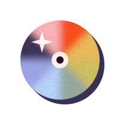
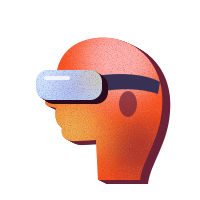
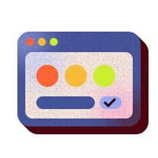
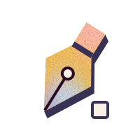

1. diagnose
- Audit the brand as it is
- Ask the people who read it
- Measure before drawing
I treat accessibility as method. Individuals with color vision deficiency shape my design decisions from the first step of a project.
Each project page follows the same path: problem, decision, evidence, result.


Created to create.





Accessibility: to anyone, anywhere, anytime.
“Creativity grows out of two things: curiosity and imagination.”
I’m an art director and designer from Brazil. I studied Publicity and Advertising at the Federal University of Santa Maria (UFSM). In my thesis, I rebuilt the course brand with color accessibility as its first criterion. I tested the palette with WCAG and with simulations of eight types of color vision deficiency. I invited an individual with color vision deficiency to sit on my examination board.
Today I create key visuals for licensed co-brandings at Paim United Creators. In a master’s program, I want to study how individuals with color vision deficiency read color in real communication situations. I want to build a replicable VR prototype to do it.
As an art director, I created the key visuals for Renner co-brandings with Disney, Netflix, Peanuts and Chevrolet. I led 180° campaigns and worked on 360° campaigns.
Main talk: “Creative (Re)Vision: Accessibility as Method in Inclusive Brand Design.” Launch of my thesis rebrand.
Thesis on color accessibility in brand design. Thesis grade: 10/10.
E-book “Popularizando a Ciência da Comunicação,” UFSM. Team of three.
Article on Sensa!, presented at Intercom Sul, hosted by Unicentro.
16th edition: Grand Prix (Rudauana) and Silver (Sensa!). 17th edition: Gold (Give a Little of Yourself). Finalist, Student of the Year, ARP Academy.
Created to create.